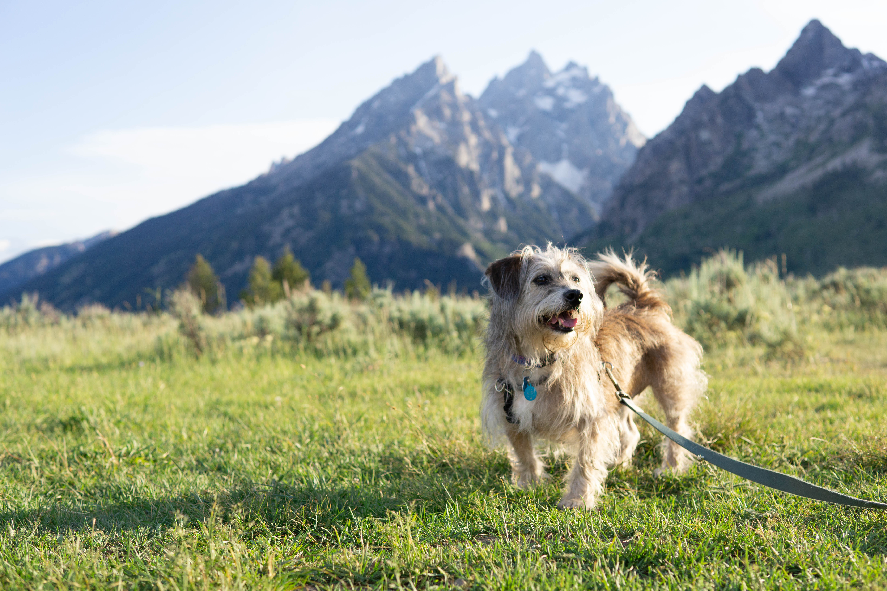
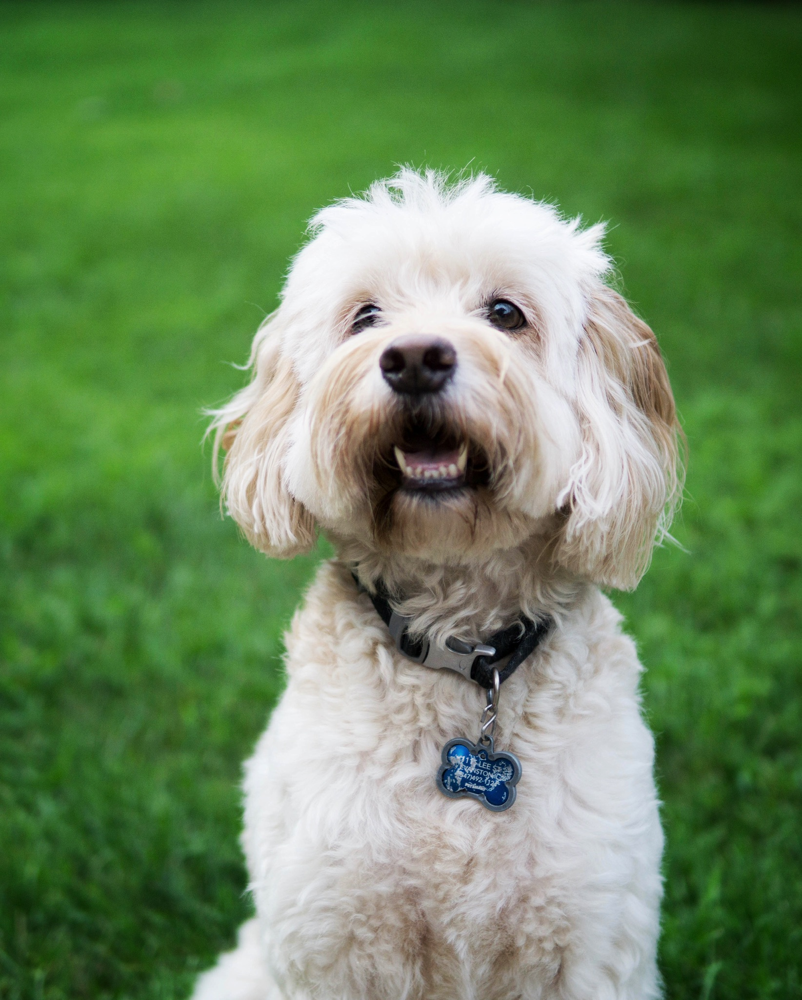
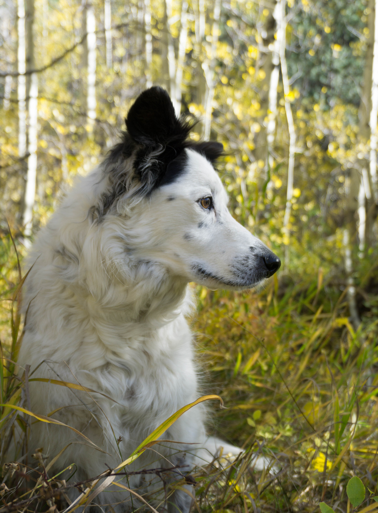
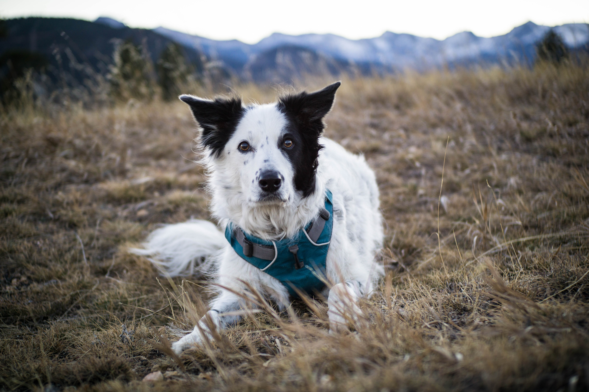
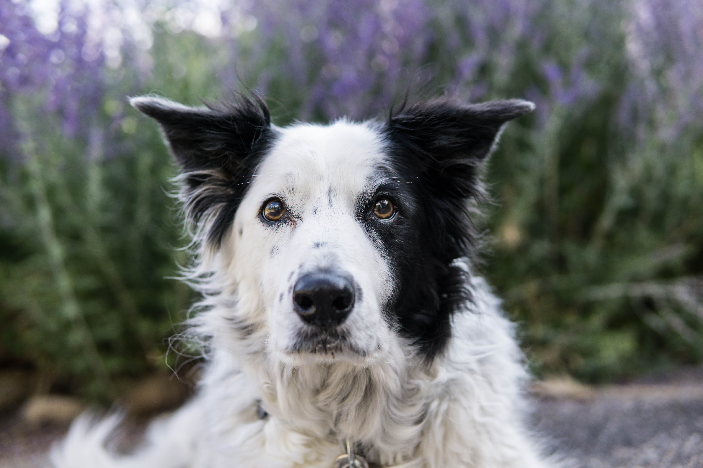

My own dog was my primary source of photographic inspiration for years. While I have had limited opportunity to photograph other people's dogs, I look forward to doing so in future. Here are a few photography tips when it comes to photographing dogs.
- Strategy: Have your camera settings set and ready to go for each shot and work quickly once you ask for the dog's attention, or whatever your goal is for the shot.
- Exposure and resolution: The best portraits are in natural light, but place the subject in the shade to avoid harsh lighting on the facial details.
- Composition: Get down at the level of the dog's face.
- Composition: Compose your shot so the whole body is visible and you do not accidentally leave out parts of the tail, paws, ears, or whisps of hair. These are essential to a good composition, just like cropping a photo of a human so just the feet are excluded feels...awkward.
- Get to know the dog. Let the dog relax and explore the area before you ask for its attention.
- Bring something the dog is interested in (a toy that makes a fun noise, tiny chunks of treats, etc.).
I've worked mostly with my own dog who happened to love training so we'd worked on being happy to sit still, as long as he was paid fairly and frequently as any model should expect. However, asking the owner to stand behind you and get the dog's attentiongetting to know the dog briefly before starting so you have an idea what will motivate them should get you off to a good start. I hope these tips are helpful.
    